Matzav Zor
Transformer un grill de quartier à Nanterre en restaurant immersif, construit autour des trois états de la matière.
La démarche
Du grill de quartier à l'expérience sensorielle
Le point de départ est un restaurant de viande existant, le Marahja Grill. Plutôt que de le « redécorer », nous sommes partis de ce qui fait le cœur du lieu — la cuisson — pour en tirer un concept spatial : la chaleur qui fait passer la matière d'un état à l'autre.
Contexte
Un local en rez-de-chaussée d'immeuble, Terrasse de l'Université à Nanterre, avec une identité très marquée (murs jaune/orange, banquettes rouges, façade rouge) mais sans lien avec une expérience culinaire forte.
La demande
Concevoir un restaurant immersif centré sur la viande : un lieu qui se vit comme un parcours, et pas seulement comme une salle à manger.
Contraintes
Établissement recevant du public : dégagements, accessibilité PMR, sécurité incendie, cuisine professionnelle, chambre froide et réserve à intégrer dans une emprise existante.
Intention
Trois mots guident le projet : séparation, tension, transfert. Chacun correspond à un état de la matière — solide, liquide, gazeux — et à une zone de dégustation.
Choix d'aménagement
Un accueil qui structure l'entrée, puis trois salles en séquence. Les volumes passent du compact et ancré (solide) à l'étiré (liquide) puis à l'ouvert et léger (gazeux).
Matériaux
Béton ciré pour la continuité, noyer pour la chaleur, marbre blanc pour le contraste, textile gris pour le confort, verre orangé pour diffuser une lumière chaude.
Transformation
Avant / Après
Le projet part d'un existant très marqué, avec une identité visuelle forte mais peu cohérente avec l'expérience imaginée pour Matzav Zor. L'objectif était de transformer l'image du lieu en créant une entrée plus lisible, plus graphique et plus immersive.
Intérieur Accueil & salle
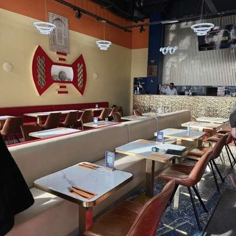
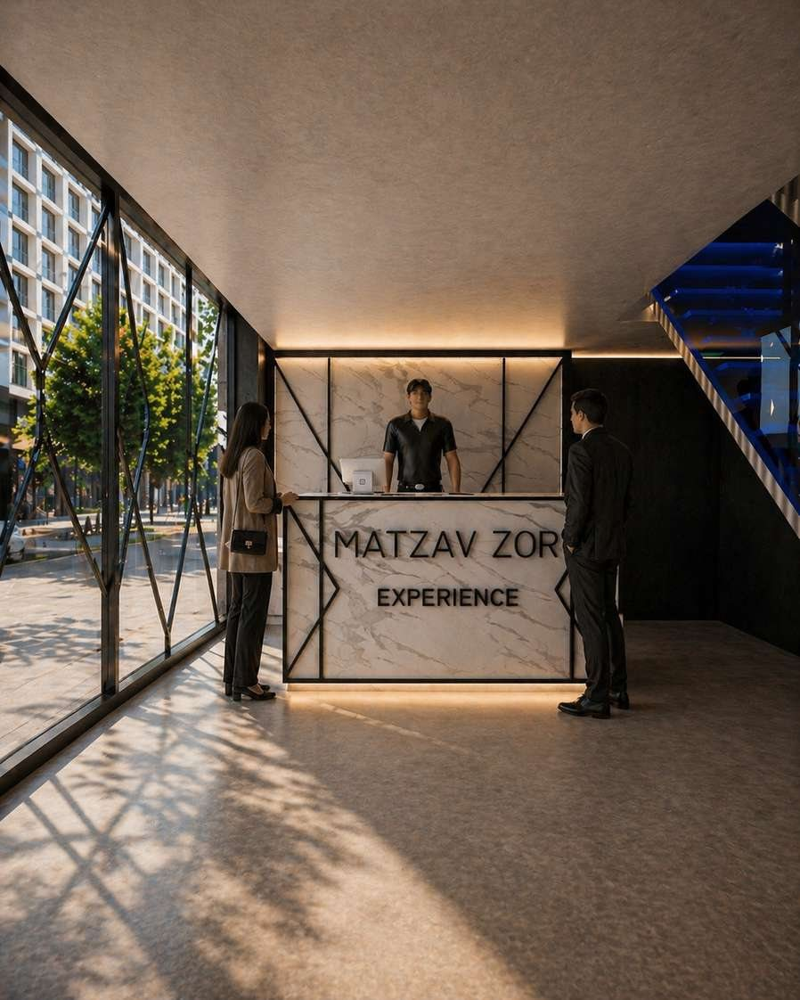
À l'intérieur, le travail s'est concentré sur la création d'un accueil structurant : comptoir en marbre clair, lignes métalliques noires, éclairage indirect et ambiance plus feutrée.
Façade Premier contact
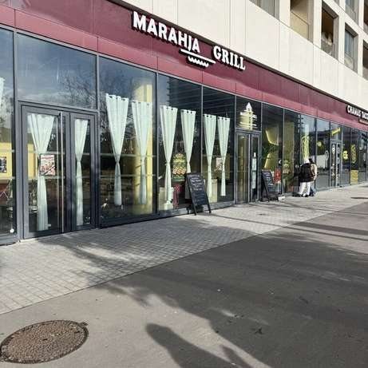
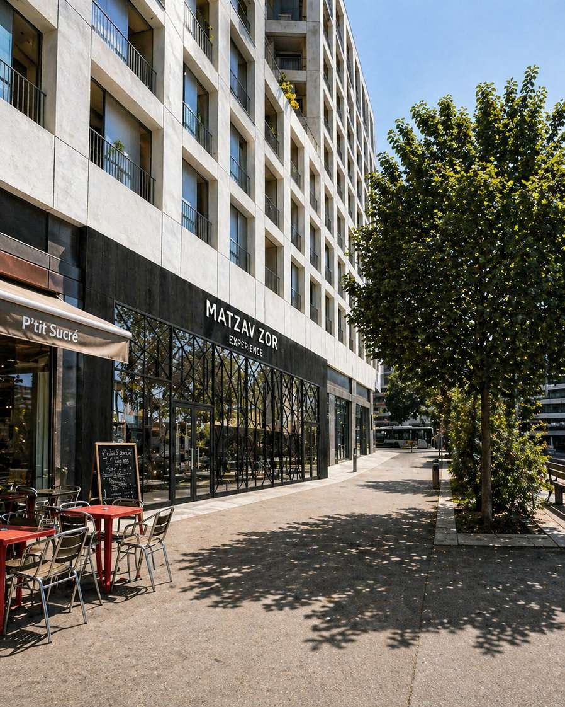
En façade, l'idée était de remplacer une devanture commerciale classique par une composition plus architecturale : bardage sombre, verrière rythmée et jeux de transparence, afin de créer un premier contact fort avec le lieu.
Visualisations 3D
Le parcours
De l'accueil aux salles de dégustation : la lumière se réchauffe et les volumes s'ouvrent à mesure que l'on avance.
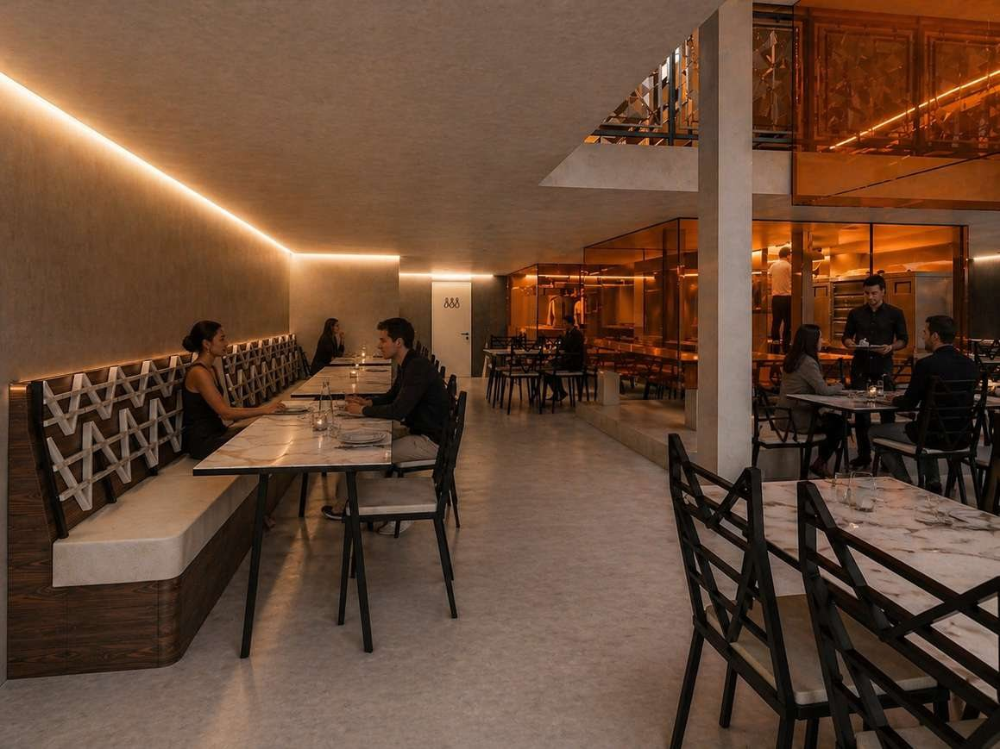
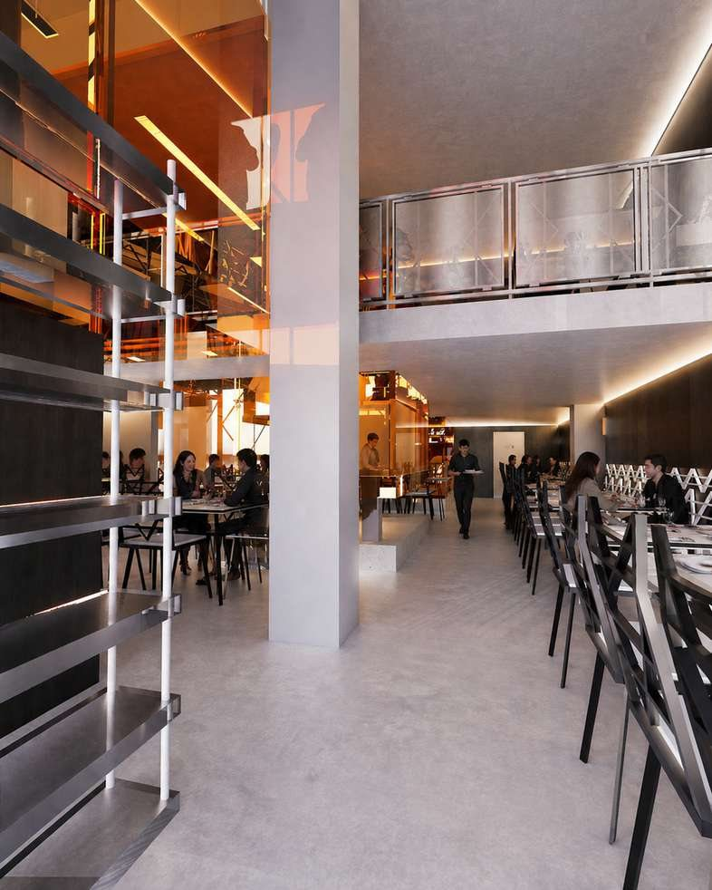
Extraits du dossier
Plans, coupes & détails
Le dossier complet compte une soixantaine de planches : relevé de l'existant, plans projetés (cotation, mobilier, revêtements, plafonds, électricité, sécurité ERP), coupes, façade et détails de mobilier. En voici quelques extraits — cliquez pour agrandir.
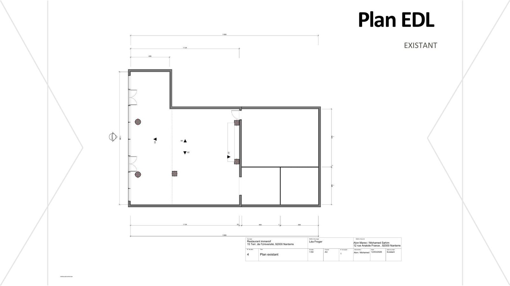
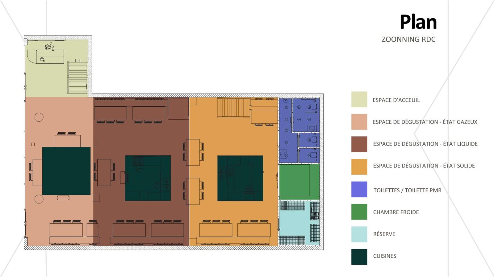
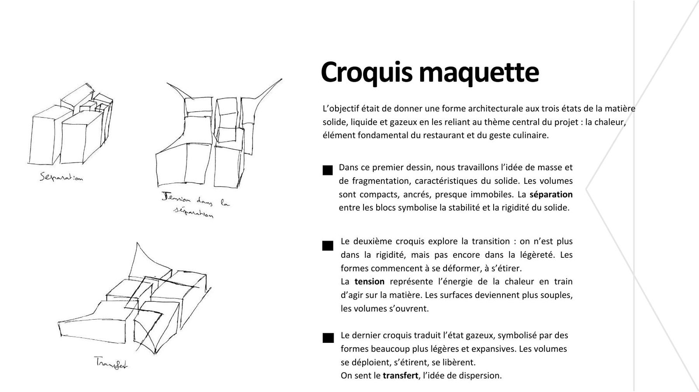
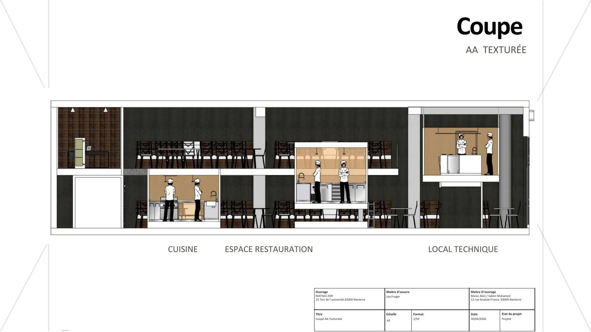
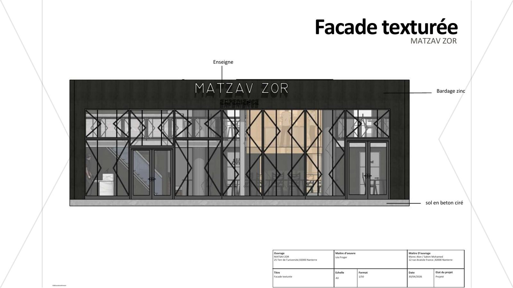
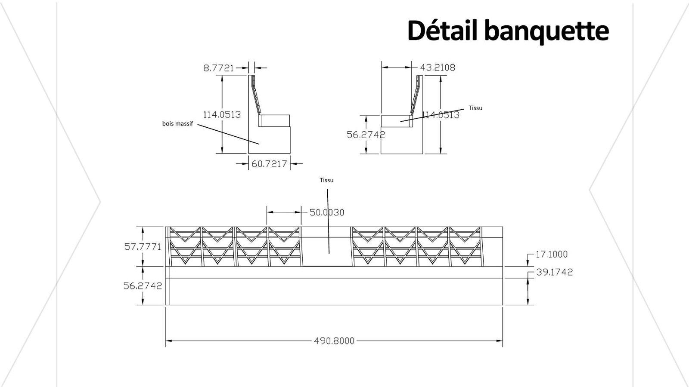
Livrables
Ce qui a été produit
Analyse
Note d'intention, recherche sur les restaurants immersifs, benchmark, relevé et photos de l'existant.
Conception
Moodboard, croquis, maquette d'étude, planche matériaux, zoning.
Plans techniques
Plans projetés, cotations, revêtements, plafonds, électricité, sécurité incendie et planche ERP.
Représentation
Coupes, façades texturées, détails de mobilier (banquette, chaise, cuisine) et rendus 3D.
Nature du projet Projet d'école réalisé en binôme. Les vues « avant » sont des photos de l'existant ; les vues « après » sont des rendus 3D.